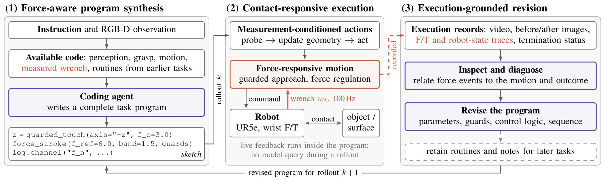
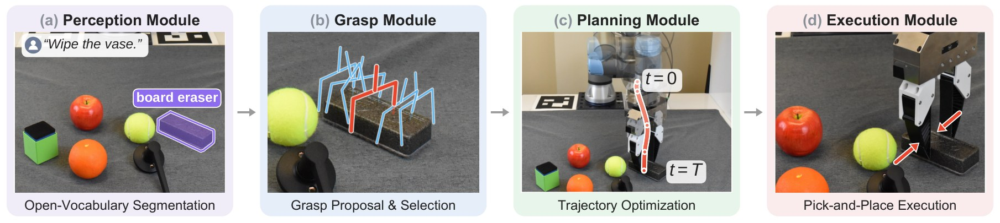
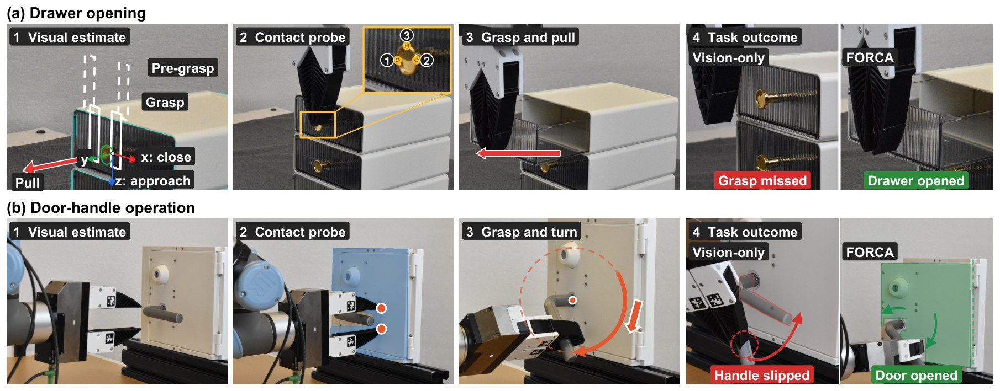
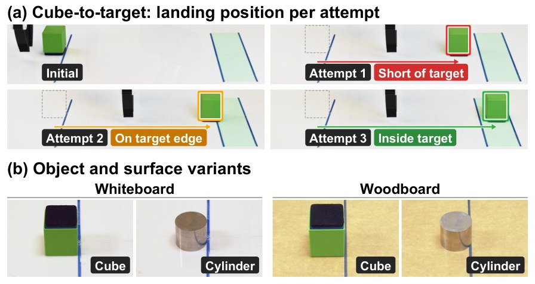
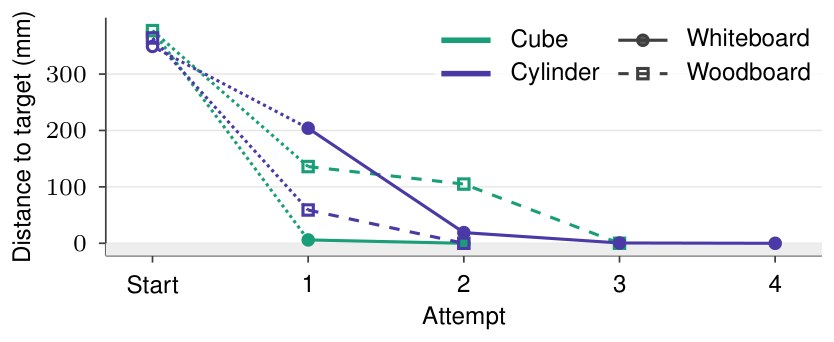
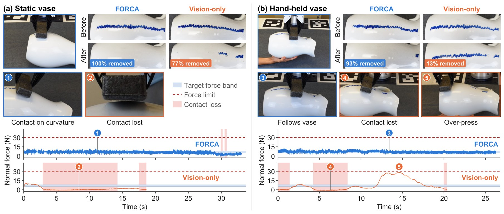
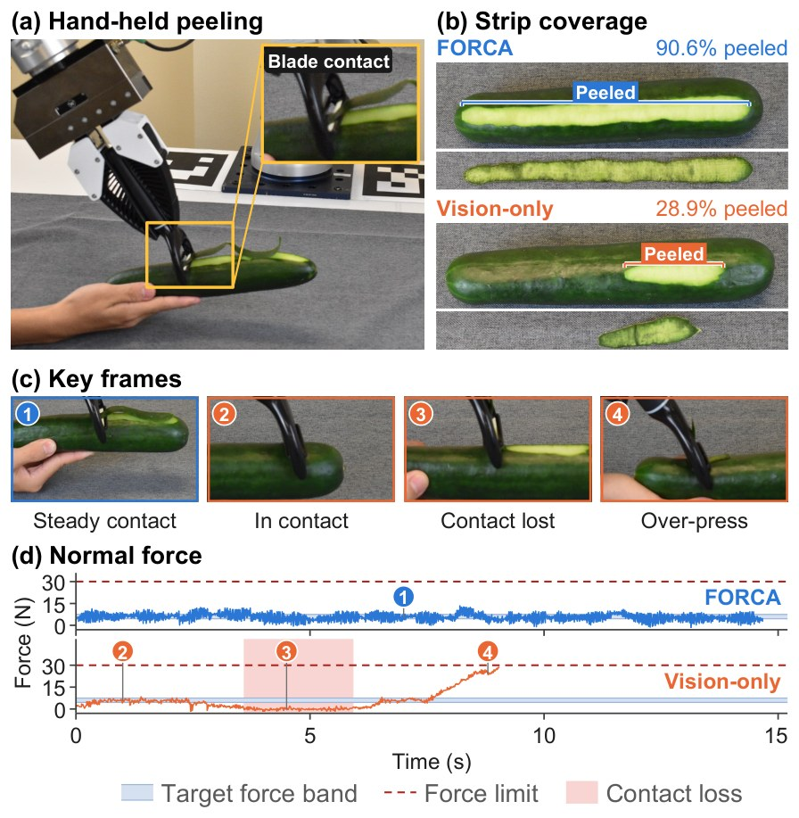
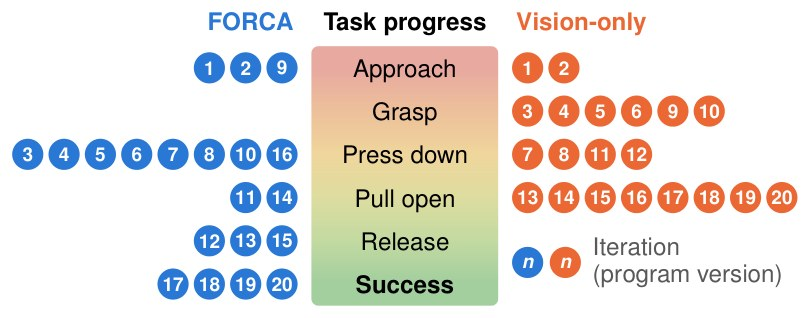

Coding agents can translate language instructions into robot programs. For contact-rich manipulation, a key challenge is to generate and refine control logic that responds to physical interaction. We present FORCA, a coding agent that takes visual observations and wrist force/torque (F/T) measurements as input to write Python programs for contact probing and force-responsive motion. Between executions, the agent inspects force records alongside visual outcomes to diagnose failures and revise both motion and force-feedback control logic. FORCA requires no demonstrations, task-specific training, or simulation. Across five real-robot tasks, we demonstrate its effectiveness in three forms of contact-rich manipulation: improving manipulation accuracy, adapting to changes in object or surface properties, and regulating contact under surface variation and object motion. Compared with a vision-only variant of the same agent, FORCA improves grasp accuracy and task success and reduces contact loss in wiping and peeling.
Given a language instruction and RGB-D observations, FORCA writes a complete Python task program with access to the measured wrist wrench. The program runs on the robot without querying the foundation model. During a rollout, contact probes refine geometric estimates such as surface height or grasp position, and a 100 Hz loop reads the wrench and adjusts motion for actions that need sustained contact. Between rollouts, the agent relates force events in the recorded trace to robot motion and visible outcomes, and revises parameters, contact conditions, control logic or the action sequence.


We evaluate FORCA on five real-robot tasks with a UR5e arm and a wrist F/T sensor, and compare it with a vision-only variant of the same agent that uses the same foundation model, instructions and skills but has no access to force data.
In drawer opening and door-handle operation, FORCA refines the visually estimated grasp pose by probing the handle and door panel. It succeeds in all 10 trials on both tasks, compared with 4/10 and 1/10 for the vision-only agent.

| Task | Method | Trans. err. (mm) ↓ | Rot. err. (°) ↓ | Success (%) ↑ |
|---|---|---|---|---|
| Drawer | Vision-only | 8.3 ± 5.4 | 9.6 ± 3.2 | 40 |
| FORCA | 5.3 ± 1.6 | 1.0 ± 0.3 | 100 | |
| Door | Vision-only | 65.3 ± 16.9 | 55.5 ± 14.9 | 10 |
| FORCA | 20.0 ± 0.9 | 0.6 ± 0.5 | 100 |
In cube-to-target, the robot knocks an object so it slides into a target region. FORCA develops a program for a cube on a whiteboard, then continues from it when the object (cube or cylinder) or the surface (whiteboard or woodboard) changes. In each new configuration it reaches the target within a few additional revisions.


In vase wiping, both agents refine their programs on a static vase and are then deployed without further revision on a vase that a person moves by hand. FORCA follows the moving surface with force feedback, while the vision-only program loses contact.

| Vase | Method | Removal (%) ↑ | Contact loss (%) ↓ | Max. force (N) ↓ |
|---|---|---|---|---|
| Static | Vision-only | 73 | 42.6 | 11.8 |
| FORCA | 99 | 0.7 | 11.3 | |
| Hand-held | Vision-only | 21 | 55.9 | 17.5 |
| FORCA | 93 | 1.6 | 12.3 |
In cucumber peeling, the robot peels a strip from a cucumber held by a person. FORCA keeps the blade in contact along the uneven surface and produces a continuous strip.

| Method | Contact loss ↓ | Excess force ↓ | Peeled ↑ |
|---|---|---|---|
| Vision-only | 40.6 | 13.4 | 37.4 |
| FORCA | 2.2 | 2.7 | 81.1 |

FORCA failed mostly at pressing the handle down. It located the latch release and end stop from the recorded press force, then fixed the remaining failures in pulling and releasing. The vision-only agent failed mostly at grasping and pulling, as the handle kept slipping out of the gripper.
@article{tan2026forca,
title = {FORCA: A Force-Aware Coding Agent for Contact-Rich Robot Manipulation},
author = {Tan, Xiao and Wang, Yixuan and Wang, Zhexi and Yuan, Wenzhen},
journal = {arXiv preprint arXiv:XXXX.XXXXX},
year = {2026}
}